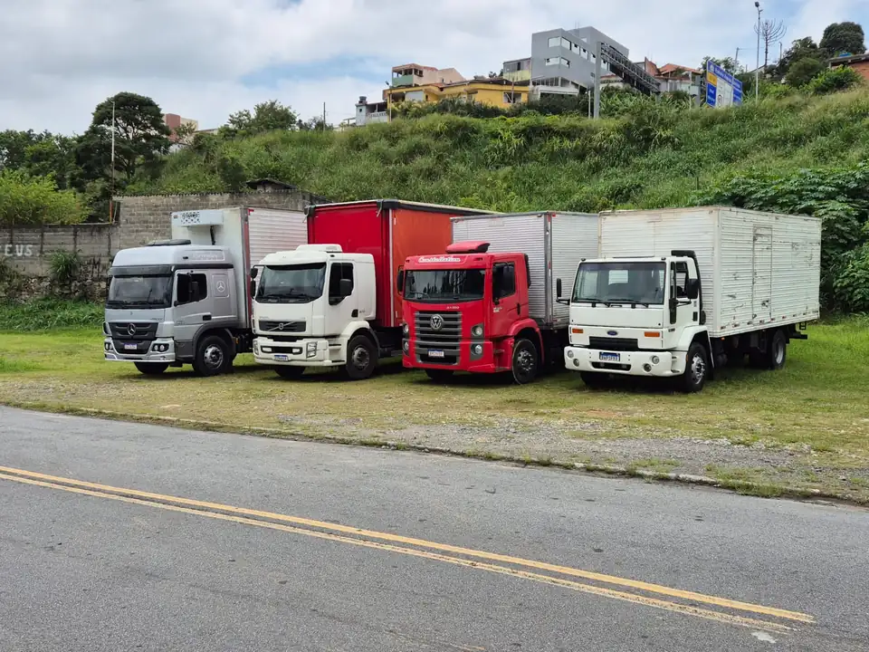
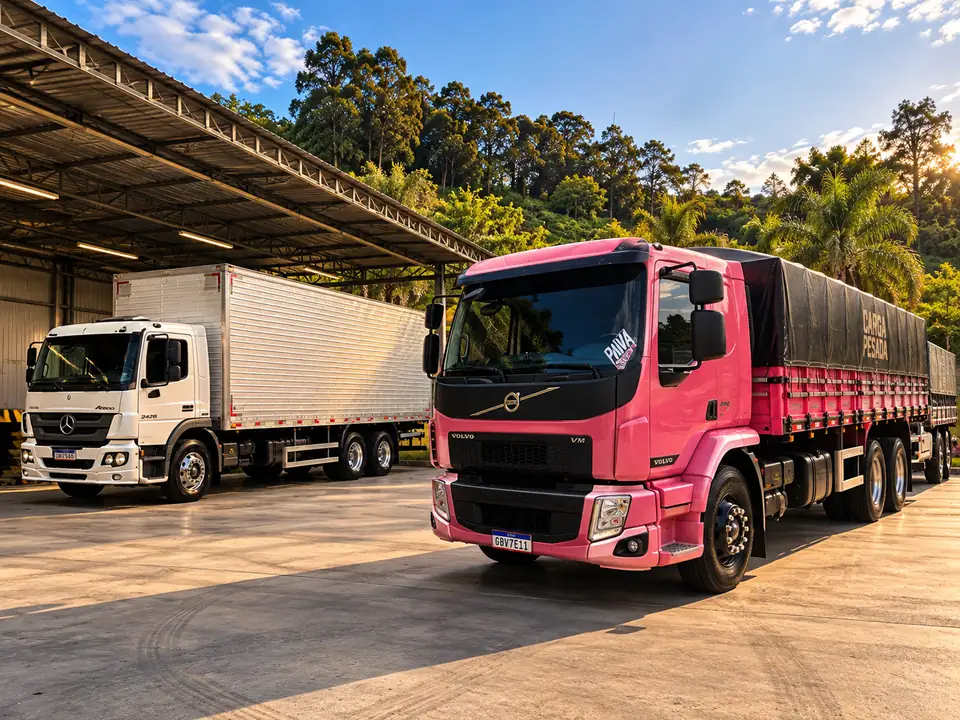
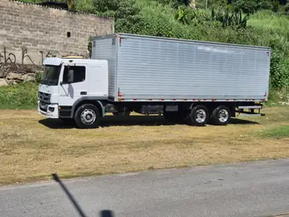
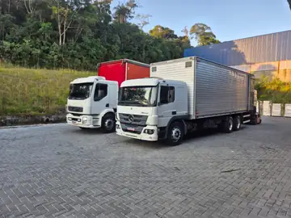

Carga fracionada
Sua carga divide o caminhão com a de outros clientes que vão para a mesma região. Você paga só pelo espaço que ocupa.
De 1 caixa a 10 paletes Cotia (SP) · desde 2008
Cotia (SP) · desde 2008
11 caminhões próprios, base a 9 km do Rodoanel. Pedido confirmado até as 11h é coletado e entregue no mesmo dia na Grande São Paulo.
Sua carga divide o caminhão com a de outros clientes que vão para a mesma região. Você paga só pelo espaço que ocupa.
De 1 caixa a 10 paletesO caminhão inteiro é seu. Ele sai da sua doca e vai direto ao destino, sem parar em outro depósito no caminho.
Truck baú ou graneleiro até 14 tO VUC pode circular na Zona de Máxima Restrição de Circulação de São Paulo, onde caminhão comum tem horário restrito.
2 VUCs na frotaUm caminhão e um motorista fixos para a sua operação, com rota e horários fechados por contrato mensal.
Contrato mensalPassamos na sua empresa nos dias e no horário combinados e levamos o que estiver separado, sem você pedir a cada envio.
Dias e horário fixosConte o que precisa transportar e a gente indica o caminhão e o tipo de frete.
Desde 2008 no Jardim Nova Coimbra, ao lado da Raposo Tavares. Todo frete sai em caminhão nosso, com motorista nosso.

Nenhum frete é repassado para terceiros. Todos têm rastreador e passam por revisão a cada 10 mil km.
das entregas no prazo em 2025
na Grande São Paulo, para pedidos confirmados até as 11h
em Cotia, desde 2008

O galpão tem cobertura para carregar em dia de chuva sem molhar a mercadoria.
entregas por mês




Pelo Rodoanel, o caminhão chega à Anhanguera, à Bandeirantes, à Dutra e à Imigrantes sem atravessar a capital. Coleta e entrega todo dia útil em:
Pelo WhatsApp ou pelo bloco de cotação no topo da página. O valor sai em até 30 minutos.
Confirmou até as 11h, coletamos no mesmo dia. Depois disso, no dia útil seguinte.
Quando o caminhão sai, mandamos no seu WhatsApp um link com a posição dele no mapa.
Na entrega o motorista fotografa o canhoto assinado e a foto chega no mesmo WhatsApp.
RNTRC ativo, exigido de toda empresa que transporta carga de terceiros por rodovia.
Seguro obrigatório e cobertura contra roubo e desvio de carga em toda viagem, até o valor da nota fiscal.
Emitimos o conhecimento de transporte e o manifesto eletrônico de cada viagem. O XML e o PDF chegam por e-mail.
Os 11 caminhões têm rastreador por satélite. A central bloqueia o veículo em caso de desvio de rota.
Confirme até as 11h e a coleta sai ainda pela manhã. Fale com a gente pelo WhatsApp.
Pedir coleta para hojeNão achou a resposta? Pergunte no WhatsApp (11) 99585-4072.
Não. Levamos de uma caixa a vários paletes. Abaixo de 30 kg vale a taxa mínima de frete.
Sim. Os dois VUCs da frota podem circular na Zona de Máxima Restrição de Circulação (ZMRC), onde caminhões maiores têm horário restrito. Eles entregam em lojas, condomínios e centros de distribuição dentro do centro expandido.
Em até 30 minutos pelo WhatsApp (11) 99585-4072, de segunda a sexta das 7h às 18h e aos sábados das 7h às 12h. Para cotar, informe origem, destino, peso, número de volumes e valor da nota fiscal.
Sim. Toda viagem sai com seguro RCTR-C, obrigatório para transportadoras, e RC-DC, que cobre roubo e desvio de carga. A cobertura vai até o valor da nota fiscal.
Na saída do caminhão você recebe pelo WhatsApp um link de rastreio com a posição do veículo. Na entrega, o motorista fotografa o canhoto assinado e a foto chega no mesmo WhatsApp.
Sim, na Grande São Paulo, para pedidos confirmados até as 11h. Pedidos confirmados depois disso são coletados no dia útil seguinte.
Produtos perigosos, carga refrigerada, carga viva e mudanças residenciais.
Na Rua Saturno, 8, Jardim Nova Coimbra, Cotia (SP), CEP 06702-170, perto da Rodovia Raposo Tavares e a cerca de 9 km do Rodoanel Mário Covas.
Olá! Aqui é o atendimento da Transportadora Azul.
Escolha uma opção e a conversa abre no seu WhatsApp: